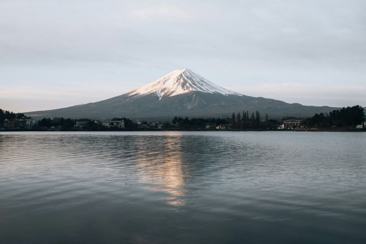

📊 4 大行程决策图表 · 视觉化速览 📊 4 Key Decision Charts
以单位分解与诚实契约替代文字堆叠，专为长辈同行控载与关键决策设计。点击任一图表可直接查看高清大图： Intuitive, responsive decision charts designed for pacing, Fuji timing, return routes, and budget. Click any card to view:
行 程
十天行程速览 10-Day Quick Glance
航 班
HK Express 香港快运 (订位代号：[booking-ref-removed] | 票种：Essential) HK Express Booking: [booking-ref-removed] (Essential)
| 行程Leg | 航班号Flight | 起飞与抵达Departure & Arrival | 舱等与备注Fare Class & Notes |
|---|---|---|---|
| 去程Outbound | UO769 | UO848 |
03 Oct (六) 01:00 槟城 (PEN) → 香港 (HKG) 转机 → 03 Oct (六) 14:45 抵达 成田 (NRT Terminal 2) |
舱等: Z | U 成田 T2 落地出关约 45-60 分钟 |
| 回程Inbound | UO629 | UO746 |
12 Oct (一) 02:20 羽田 (HND Terminal 3) → 香港 (HKG) 转机 → 12 Oct (一) 15:40 返抵 槟城 (PEN) |
舱等: W | Z 10/11 20:40 出门 · 浅草乘都营浅草线直通羽田 T3 |
宿 舍
3.1 东京基地：LUXURY STAY HOTEL 浅草竜泉店 (33号房) 3.1 Tokyo Base: LUXURY STAY HOTEL Asakusa Ryusen (Room 33)
• 官方注册大楼名称：LUXURY STAY HOTEL 浅草竜泉店（Airbnb 房源名：
Yoin TOKYO in Asakusa）。
• 正规合法执照编号：7台台健生環 第10242号（东京都台东区保健所生活环境课依《旅馆业法》正式核发，100% 合法合规、消防卫生完全达标）。
• 物业属性与开业年份：2026 年崭新开幕公寓式酒店（全栋 23 间独立套房，配载正规乘客电梯与无障碍设施，现代新耐震基准建筑，卫浴家电一手全新）。
• 多平台真实口碑验证：Trip.com 真实台湾钻石会员家庭住客给出 10/10 满分好评（2026年9月1日评价：“這次入住體驗非常滿意！地理位置很方便，附近交通、餐飲都很齊全，房間乾淨整潔，環境舒適，入住期間能感受到店家對細節的用心”）；Airbnb 维持 4.8~5.0 满分区间超赞房东。
• 精确地址：〒110-0012 東京都台東区竜泉 3-10-7（原文件所提「フォルテハイツ」为 1976 年老楼旧名已彻底作废，给出租车司机出示正式大楼名即可！）。
👉 盥洗备品齐全，洗发水沐浴乳吹风机都不用带。
② 入住前须提交身分证件：日本民泊法规定，须提供 2 人的姓名、住址、职业与护照资料页照片。只走 Airbnb 站内讯息传送，不要用 email。另请先确认两本护照效期涵盖 2026年10月 (建议 6 个月以上)。
🛒 住处周边生活圈与 24h 应急补给（Google Maps 步行实测 · 点击直达导航）
基准起点：公寓大门 東京都台東区竜泉 3-10-7 LUXURY STAY HOTEL，全为平坦柏油街道（零台阶、零陡坡）：
| 分类 / 店名 | 步行距离与耗时 | 营业时间 | 特色与长辈友好度 | 一键导航 |
|---|---|---|---|---|
| 🍎 まいばすけっと (My Basket) 竜泉1丁目店 |
267 米 (3.9 分) | 08:00–23:00 | 永旺旗下平价生鲜！2L大瓶水（¥100）、明治鲜奶、麝香葡萄与切片水果，物价比便利店省 40%，刷 Suica/Apple Pay | 📍 Google 导航 |
| 🏪 ローソン (Lawson) 台東三ノ輪一丁目店 |
278 米 (4.0 分) | 24 小时 | 通道宽敞！自带「街角厨房（まちかど厨房）」，清晨/深夜供应现炸炸鸡块（からあげクン）、现做便当与热饭团 | 📍 Google 导航 |
| 🪑 セブン-イレブン (7-Eleven) 台東三ノ輪一丁目店 |
392 米 (5.6 分) | 24 小时 | 内设 Eat-in 堂食长椅座（长辈可坐着慢饮热茶）、Seven Bank ATM（随时插 Wise 卡提日元现金）及干净公厕 | 📍 Google 导航 |
| 🍞 マイマート (Main Mart) 竜泉店 |
74 米 (73 秒 · 转角) | 10:00–22:00 (周日休) |
就在转角！老街杂货铺，收银台旁常设代售浅草百年传奇名店【Pelican ペリカン】手作厚吐司，0 排队偶遇！ | 📍 Google 导航 |
| 🧺 CAPITAL WASH コインランドリー (千束) |
247 米 (3.6 分) | 24 小时 | 阴雨天强力烘干备用！大型燃气强力烘干机，20 分钟 ¥200 即可烘得全家衣物蓬松滚烫干透 | 📍 Google 导航 |
| 🍚 すき家 (Sukiya) 下谷三丁目店 |
502 米 (7.0 分) | 24 小时 | 随时供应热气腾腾的日式烤鲑鱼早餐定食、牛肉饭、热猪肉味噌汤，长辈不想吃冷食时的全天暖胃首选 | 📍 Google 导航 |
3.2 河口湖住宿：SAWA Hotel（サワホテル）· 1晚 ✅ 已预订 3.2 Kawaguchiko: SAWA Hotel (Booked)
| 饭店 | SAWA Hotel（サワホテル） — ✅ 已预订，定案 |
| 地址 | 山梨県南都留郡富士河口湖町船津 2090 |
| 房型与价格 | Twin Room 21㎡（税后 RM 332 · 不含早） |
| 空间与设施 | 21㎡ 宽敞大空间（2 个 28 吋大箱可平摊）、房内独立微波炉 |
| 早餐 | ❌ 不含早餐 — 开车 4 分钟至 Ogino 大超市（1.4km · 专属大停车场），前一晚买好，房内微波炉加热 |
| 🔴 退房时限 | 10:00 前必须退房（硬性上限，已确认） — Day 5 上午定于 09:45 优雅退房，比上限早 15 分钟，从容无压力 |
| 停车 | ✅ 门口平面免费停车 — 无立体机械车位，没有限高／限宽 |
| 位置 | 离河口湖大桥 1.5 km（自驾 3–5 分钟；步行不现实） |
② 饭店本身没有免费接驳车（那是東横INN 的服务）→ 不租车的备案只能靠周游巴士＋站前步行。但 ゆらり 自己有河口湖站发车的免费接驳车（官网提前 1 小时预约），温泉这段无车也去得成。
③ 离湖 1.5km → 清晨看富士山一定要开车，走路到不了湖边。
④ 退房时限 10:00（硬性） → Day 5 晨间环线预计 08:20–08:25 回到饭店，09:45 优雅退房，洗热水澡吃热食收行李充裕 75–80 分钟，从容无压力。
交 通
4.1 交通卡与支付策略（已实测验证 ✅）4.1 Suica & Payment Strategy
| 成员Member | 方案Option | 取得/储值方式Method | 实测与体验Experience |
|---|---|---|---|
| 本人 (User) | iPhone 17 Pro Apple Wallet Suica | Wise Digital Visa 储值 | 已实测成功开通 ✅ 快捷交通模式：手机无需亮屏解锁，碰闸机秒过 |
| 妈妈 (Mom) | Welcome Suica 红色实体卡 | 成田机场 T2 B1 现场现金购买 | 免押金、长辈 0 门槛；建议附挂绳伸缩卡套挂于随身小包防丢失 |
4.2 驻地交通特性：台东区竜泉4.2 Transit from Ryusen Base
| 车站Station | 步行距离Walk | 直达热门目的地Direct Destination |
|---|---|---|
| 三ノ轮站 (Minowa) | 6 分钟 | 日比谷线直达：上野 (4m)、秋叶原 (8m)、筑地 (18m)、银座 (20m)、六本木 (28m) |
| 入谷站 (Iriya) | 10 分钟 | 日比谷线 (⚠️ 无下行手扶梯，拖大行李建议走三ノ轮站) |
| 浅草站 (Asakusa) | 16 分钟 | 银座线 (起点站必有座去涩谷) · 都营浅草线 (直达羽田机场) |
门口巴士小抄：竜泉站牌（出门 1–2 分钟 · 均一价 ¥210）Bus Cheatsheet: Ryusen Stop (1-2 min walk, flat ¥210)
三条都营巴士线共用竜泉站牌，平地上下车、零楼梯，带长辈或拎大包时优先。同名站牌在国際通り两侧各一根——看巴士车头显示的行先（终点站）再上车。Three Toei routes share the Ryusen stop, step-free boarding. Check the destination sign on the bus front before boarding.
| 路线Route | 方向（车头行先）Direction | 用途与时间Use & Time |
|---|---|---|
| 草43 | 浅草雷門行 | 去浅草寺只有 3 站，约 10 分钟。逛本堂在「浅草公園六区」下车更近，拍雷门坐到底站 |
| 草63 | 浅草寿町行 | 同样去浅草（浅草公園六区／浅草雷門南下车），跟草43 二选一先到先坐 |
| 草63 | 池袋駅東口行（反方向） | 直达池袋 35–40 分（比地铁换乘省力）· 中途西日暮里可换 JR 山手线 |
| 都08 | 日暮里駅前行 | 换山手线首选：约 10 分钟到日暮里（山手线 + 京成 Skyliner + 常磐线） |
| 都08 | 錦糸町駅前行 | 直达押上（晴空塔）约 20 分钟，中途東武浅草駅 |
⚠️ 去浅草：草43＋草63 合并约 10 分钟一班（草43 约 30 分一班·末班 20:47；草63 约 10–15 分一班·末班 21:51），先来哪班坐哪班。都08 班距（已核对官方三种班表 · 日暮里駅前②番のりば）：平日 8–10 分、土曜 11–13 分、休日 11–15 分 — 周末不是 20–30 分一班，比想像密。始発 06:30、終発 22:04–22:18。晚归一律日比谷线。竜泉→三ノ轮站只有 1 站、步行 7 分钟即到，不值得坐巴士。To Asakusa, Kusa 43 + Kusa 63 combine to ~10 min headway (last 21:51). Toei 08 headway, checked against all three Toei timetables: 8-10 min weekdays, 11-13 min Saturdays, 11-15 min holidays. First 06:30, last 22:04-22:18. Take Hibiya Line late night.
日 程
随身页只回答「现在往哪走」—— 当天时间轴 ＋ 地图 ＋ 每一站一键导航，不解释原因。
决策图表是摊开来比的四张图。
每天的页面底部有直接跳到那天地图的按钮，随身页也能跳回同一天的手册。This handbook holds the reasoning, alternatives, bookings and budget. The companion holds today’s timeline, map and one-tap navigation. Charts are the four comparisons. Each day links straight to its map, and back.
Day 1 · 10月3日 (六) 14:45 落地成田 T2 · 入住安顿 · 晚间3大B PlanDay 1 · Oct 3 Land NRT 14:45 & Base Check-in
成田 T2 (14:45) → 空港第2ビル駅换票 → Skyliner (目标 16:42) → 日暮里 → 都08 巴士直达竜泉 → 晚间3大B PlanNRT T2 14:45 Land → Skyliner → Taxi to Ryusen
- 快速入境：出示 Visit Japan Web 离线二维码与护照，预留 45–60 分钟过关与取大行李。
- 1F/B1 办卡提现：1F 或 B1 7-11 ATM 用 Wise 提日元现钞（选 JPY 无换汇）；B1 JR 红色机台为妈妈买 Welcome Suica 实体卡（现金充值 ¥3,000–5,000）。
- ⚠️ 专机极速出票（已购妥 Trip.com 官方票券 ✅）：京成专用券売機按
Code Exchange扫官方 e-ticket QR（2人1码，一次选连号座位出 2 张实体磁票）。 - 🎁 目标锁定 16:42 黄金班次：线上票不锁班次不锁座，留足 30 分钟入境与办卡 Buffer，目标选 16:42（若出关极快则 16:22，绝不慌乱奔跑）。车内有专属大件行李架与充电插座，从容闭目养神。
- ⭐ 路线 A（Plan A 首选公车 · ¥5,040 2人，极省心接地气）：Skyliner 坐到 日暮里站 (36分，17:18抵) → 东口电梯下站前 ② 番のりば搭 都08 巴士（17:33 发车，¥210/人）。
🧳 大件行李合规与体验：东京都交通局明文规定手荷物三边和≤250cm、≤30kg均免费合规携带（28寸行李箱约158cm完全合规）；日暮里是始发站（全空车上车），挑低地板无台阶区坐下扶好箱子，仅坐 6 站（8–10分钟）直达「竜泉」站牌，下车平路直走 143 米（实测 2 分钟） 直达公寓大门！ - 路线 B（Plan B 备选打车 · 遇雨或极疲劳）：Skyliner 多坐 5 分钟到终点 京成上野站 (41分，17:23抵) → 车站地下出租车排班处打车直达大楼门口（Google Maps 实测 1.9km，7–10分钟，跳表仅约 ¥1,000–1,200）。
- 京成アクセス特急直通浅草：空港第2ビル駅 → 浅草站 75 分直通，免特急券、Suica 直接刷，¥1,276/人 (IC)。再打车 1.8km 到公寓 ~¥1,100。2 人共约 ¥3,650，比 Skyliner 方案省 ¥2,350。
- 缺点：不划位，可能站 75 分钟。但 T2 是第 2 站 (T1 之后)，16 点台通常有位。浅草站 A18 有电梯。
- 决策点：15:45 出关后看京成 B1 券売機/柜台队伍，超过 10 人就改走 Plan B。
- 为什么不选京成本線特急：¥1,052/人虽最便宜，但 70-75 分只到京成上野，还要再打车 ¥1,400 — 比 Plan B 又慢又贵。
- 房间特点：输入智能锁入住，放好大行李，熟悉两张独立单人床与电梯环境。
- 生活周边与24h应急（Google Maps实测 · 点击直达）：
| Plan B 方案 | 适合场景与体验特色 | Google 评分与地图导航 |
|---|---|---|
| 方案 B1：浅草寺夜间点灯 | 幽静拍照首选，日落点灯至 23:00，几乎完全没有游客，计程车 5 分钟直达 | Google 4.6★ |
| 方案 B2：下町温泉钱汤 | 舒缓搭机疲劳首选，曙汤 (Akebono-yu) 或 寿汤 (Kotobuki-yu) 泡天然碳酸泉 (¥550/人) | Google 4.3★ |
| 方案 B3：上野不忍池夜景 | 感受夜间烟火气，不忍池湖畔漫步与阿美横町高架下海鲜屋台 | Google 4.3★ |
Day 2 · 10月4日 (日) 浅草寺晨光 · 待乳山缆车 · 桜橋拍晴空塔 · 墨田茶歇 ➔ 傍晚秋叶原周日步行街与霓虹夜景Day 2 · Oct 4 Asakusa, Sakurabashi, Mukojima & Akihabara Night
浅草清晨空景 → 传法院通炸肉饼 → 待乳山迷你缆车 → 桜橋拍晴空塔 → 向岛百年老茶铺 → 秋叶原周日步行者天国 & 赛博霓虹夜拍 → 日比谷线8分钟回公寓 · 🗺️ 全程一键导航Scenic Walk: Base → Sensoji → Sakurabashi → Mukojima → Akihabara
- 公车省力 1.4km：06:30 沿茶屋町通步行约 140m 至「竜泉」公车站（约2分钟平路，¥210/人，刷Suica）。先来哪班坐哪班：首选 06:37 都08（车头显「錦糸町駅前」，東武浅草駅前下车向南平路280m到雷门，06:49抵达）；备选 06:44 草43（⚠️周日车头显「浅草寿町」，在「浅草一丁目」下车向东平路240m到雷门）。省下 1,500 步体力留给拍照！
- 独享清静晨拍：06:50–07:45 雷门 (Kaminarimon) 大灯笼下完全无人遮挡；仲见世街紧闭铁卷帘门画满「浅草绘卷」浮世绘；本堂 06:30 开门，晨课诵经声中肃穆清幽。
- 摄影轻装配置：相机 40mm 定焦挂胸前抓拍妈妈自然肖像与老街晨光景深；手机 0.5x 超广角贴身仰拍大灯笼巨龙雕刻，4x 长焦特写五重塔金顶飞檐。
- 顺步步行约 4 分钟即达：浅草寺本堂西门出寺步行约 300m（浅草 2-6-15）。08:00 开门第一批进店免排队，直上 2 楼挑选舒适复古皮沙发座（注：上下旋转楼梯由儿子端热饮，长辈扶扶手慢行；若不想上楼 1 楼亦有软座）。
- 舒缓回血早餐：点一份现烤挪威心形华夫饼（经典焦糖棕芝士）两人分食尝鲜，妈妈享用热拿铁或热茶，深层放松 1 小时。切勿贪多吃撑，为后续街头小吃留足胃口。
- 桧木拱廊街与名点 (09:20)：出店即是全日本首条纯桧木地板拱廊街【西参道】，平坦零日晒。在入口【花月堂本店】打包云朵般巨型菠萝包（纸袋装好下午吃）；顺步走入仲见世商店街散策。
- 传法院通爆汁炸肉饼 ＆ 雷一茶特浓抹茶 (10:00) ★：朝圣浅草排队名物 浅草メンチ (Google 4.1★ / 3,500+条好评)！使用高座豚猪肉+牛肉与甘甜洋葱捏制，金黄爆汁（¥400/个·⚠️只收现金 Cash Only），店侧专设站立食用区趁热吃完。吃完顺道沿街向东平路直行仅 75 米（平路1分钟）至 【雷一茶 传法院通店】来一杯“お浓茶”特浓抹茶拿铁或浓茶冰淇淋（微苦回甘，解油腻第一绝配！）。
- 人力车体验 (10:20 · 可选·推荐给妈妈)：雷门前上车，30分钟约 ¥9,000–13,000/两人，车夫帮拍各机位合照。
- 浅草文化观光中心 8F 免费展望台 (10:40–11:15)：雷门正对面的 浅草文化观光中心 (8F 展望台 09:00–22:00 · 免费)——电梯直达、坐椅吹风、有优质卫生间，妈妈中场舒适休息，俯拍仲见世全景与晴空塔。
- 尾张屋手打荞麦面 本店 (11:30开门) ★：⚠️ 尾张屋周日 11:30 开门（注意店内只收现金 Cash Only！）。11:15 从展望台步行 2 分钟至本店门口，第一批入座百年老铺沙发卡座，品尝入口酥脆温热的上天妇罗大虾荞麦面，完全免排队！
- 待乳山圣天 (12:20 · 幽静避暑)：雷门出来打车5分钟(约¥600，省去大太阳走1.2km)直达 待乳山圣天 (Google 4.5★)。搭乘全东京极其罕见的免费 4 人座斜坡迷你登山小缆车 (さくらレール) 轻松滑上山顶本堂，看白萝卜祈愿与幽静日式庭院，几乎零游客，清风徐徐，长辈歇脚首选。
- 桜橋 (Sakurabashi) 纯行人景观桥 (13:20)：出寺往东走 300 米踏上 桜橋 (Google 4.2★)。东京独一无二的 X 字形纯行人专用桥（零机动车、零噪音尾气）！站在江心宽阔观景台，以宽阔的隅田川与对岸完整的晴空塔为背景，拍下全天最美母子明信片合照，从容漫步跨入墨田区。
下桥后不用赶路，在墨田区找一处舒适茶室坐下彻底歇腿、喝茶、充手机电，为傍晚秋叶原蓄满体力：
- 选项 A【300年历史鼻祖 · 和果子百名店】長命寺 桜もち (Google 4.2★ / Tabelog 3.76)：下桥仅 230 米！创立于 1717 年的樱饼鼻祖（周日 08:30–18:00），坐古朴沿河茶室，薄皮咸甜樱饼配上等热煎茶（阿姨无限免费续热茶），极其暖胃，仅 ¥350–400/人。
- 选项 B【170年江户老铺 · 和果子百名店】言問団子 (Google 4.2★ / Tabelog 3.70)：下桥 290 米！文豪最爱的纯天然三色团子（红豆/白豆/味噌，周日 09:00–17:00），无竹签、如凝脂般软嫩入口即化，大茶室全为舒适靠背桌椅（无需脱鞋盘腿），约 ¥750/人。
- 选项 C【水町河畔西式松软/抹茶】Tokyo Mizumachi：下桥沿河漫步至水町，进 むうや (Muuya) 吃布丁般软烂的法式厚吐司，或进 甘味処 いちや 吃白玉抹茶馅蜜（约 ¥800–1,000/人）。
- 前往秋叶原（15:45动身）：
• ⭐ 推荐长辈省力直达打车：長命寺门口叫计程车 (GO App) 直达【末広町站/秋叶原北端】（约4.7km，15分钟，车费约 ¥2,000，免除等车走路，16:00–16:15 准点抵达！）；
• 大众交通：步行 390m 至「向島二丁目」搭都营巴士【草39】(¥210，约20-30分一班) 8分钟过桥至浅草雷门，转银座线（始发站100%有座）7分钟直达末広町站（出站即是秋叶原北端）。 - 抢拍周日「步行者天国」(16:15–17:00)：⚠️ 警视厅冬季时令：10月起步行者天国于 17:00 准时结束恢复通车！从末広町出站正好从北向南走在中央通大马路正中央，与巨幅动漫招牌合影，街拍张力拉满！
- 蓝调日落与赛博朋克霓虹夜景 (17:00–18:30) ★：17:00 街道解封通车，全秋叶原巨幅LED与霓虹灯全开！17:20 日落蓝调时段，漫步电气街口、逛 Radio会馆 与大型扭蛋店。
- 长辈高舒适度晚餐 (18:30–20:00)：车站旁 友都八喜 (Yodobashi-Akiba) 8F 美食街，整层拥有炸猪排、和牛寿喜烧、鳗鱼饭等多元选择，宽敞沙发大卡座、免街头排队、洗手间极其现代干净。
- 神速回公寓 (20:15)：秋叶原站搭日比谷线（北千住方向）仅 4站、8分钟一车直达三ノ轮站（1b出口有电梯），平路步行 670m（约8分钟）于 20:30 回到竜泉公寓，洗热水澡早早休息！
| Plan B 方案 | 适合场景与体验特色 | Google 评分与地图导航 |
|---|---|---|
| 方案 B1：teamLab Planets TOKYO | 室内水上光影展，裸足涉水、浮空兰花与水晶宇宙，雨天或避暑沉浸式首选 | Google 4.7★ (丰洲) |
| 方案 B2：隅田川观光水上巴士 | 浅草码头搭乘未来感玻璃船舱观光船 (HIMIKO/HOTALUNA) 直达台场或滨离宫，零体力看东京湾 | Google 4.2★ (浅草码头) |
| 方案 B3：浅草文化中心 & 合羽桥 | 隈研吾设计 8F 免费展望台俯瞰浅草全景；顺逛日本最大料理烘焙道具街 | 浅草中心 4.4★ / 合羽桥 4.4★ |
Day 3 · 10月5日 (一) 上野江户奇趣晨景 (金箔唐门·只剩脸的大佛·清水舞台月之松) ➔ 银座线5m ➔ 日本桥三越文化财 · にんべん高汤 · COREDO室町Day 3 · Oct 5 Ueno Edo Wonders ➔ Nihombashi Mitsukoshi & COREDO
上野东照宫 → 上野大佛 → 清水观音堂月之松 → 花园稻荷鸟居 → 弁天堂顺路过街 → 大户屋平价家常定食/拉面尝鲜 → 银座线5m直达 → 日本桥三越国宝级百货 → にんべん现刨热高汤 → 福德神社竹林 → 悠闲早归蓄力 · 🗺️ 全程一键导航Ueno Edo Trail & Ootoya ➔ Nihombashi Mitsukoshi, COREDO & Early Rest
- 交通与无障碍登顶：竜泉公寓步行约 8 分钟至三ノ轮站，搭日比谷线仅 2 站 4m 直达上野站。走 5a 出口垂直电梯直升地面，过街进「上野之森 Sakura Terrace」搭商场直梯直达顶层公园口，走平路进公园，完全不爬山、不走陡台阶！
- 东照宫晨景 (09:05–09:40) ★：09:00 开门第一批入园独享晨光空景！漫步 200 座大名巨型石灯笼林道，欣赏贴满纯金箔的 400 年原装金碧辉煌唐门 (国宝文化财)，大石板平路无台阶。
- 上野大佛 (09:40–09:55)：仅走 100m！全日本最奇特的「绝不跌倒·永不落榜大佛」（历经大地震与战乱，仅剩一张大青铜佛脸镶嵌在石壁上，寓意「已不能再跌了」，摸摸佛面祈愿健康平安，故事生动有趣）。
- 清水观音堂 & 浮世绘「月之松」(09:55–10:25) ★：走 150m！建于 1631 年仿京都清水寺木造悬空舞台（上野现存最古老建筑）；欣赏歌川广重世界级浮世绘《名所江户百景》原型的360度完全圆形奇松「月之松」，透过松圈俯瞰全景，极富艺术趣味。
- 花园稻荷神社 (10:25–10:45)：顺路打卡朱红色千本小鸟居长廊，光影斑驳，给妈妈拍红廊雅致肖像。
- 不忍池湖心直道 (10:45–10:55 · 拒绝枯燥)：顺平缓无障碍步道走入湖心直道，拍一张八角形朱红【弁天堂】外观（⚠️ 10月荷花已彻底凋谢枯萎，坚决不在湖边枯燥兜圈），直接穿过中之岛直道，10:58 跨出南门过马路，无缝接档平价暖胃午餐！
- 首选推荐【大户屋 上野公园店】（人均仅 ¥950–¥1,200 · 2人仅约 ¥2,000出头！）：
- 地理与设施满分：弁天堂南门过街仅 80 米，大厦配备垂直直达电梯至 3F，全店宽敞大沙发卡座，坐感极舒展。
- 长辈家常健康味：现烤青花鱼定食、黑醋鸡肉炖蔬菜、茶碗蒸与热味噌汤，米饭可选软糯五谷饭，温润软烂极好消化，契合妈妈平价省钱不浪费的喜好。
- 全中文平板点餐：彩色大图与中文界面，自主点单毫无沟通压力。
- 特色拉面尝鲜备选（人均约 ¥900–¥1,100）：
- 【一蘭 アトレ上野山下口店】：日本代表性拉面体验！客制单勾选「面偏软（柔らかめ）、清淡无油、不辣（无秘制酱汁）」，长辈也能吃得惯。
- 【一風堂 上野広小路店】：步行 4 分钟即达，大桌靠背椅、温润乳白豚骨汤，免费温博士茶。
- 经典景观备选：【伊豆栄 本店】280 年不忍池景观烤鳗鱼饭（人均 ¥3,500–4,500）。
- 神速转场（地下全空调零日晒）：走出餐厅步行 3 分钟 (248m) 至上野广小路站（走 A1 出口旁垂直电梯直达 1 号站台），搭【银座线】直达仅 **3 站 5 分钟 (¥180)** 直抵【三越前站】(A4/A6出口地下通道直结三越与COREDO室町，推车轮椅无障碍)。
- 日本桥三越本店 (13:00–14:15)：1673年开业的「日本第一家百货」（本馆被指定为国指定重要文化财）。欣赏 1~5 楼挑空中央大厅震撼的 11 米天女木雕像（まごころ像）与管风琴，乘坐大正时代复古手摇电梯，逛 B1 堪称艺术品级别的日本顶级食品街（Depachika），直达 RF「日本桥庭园」露天长椅晒太阳吹微风。
- COREDO 室町 1 & 2 · にんべん柴鱼高汤吧 & 福德神社 (14:15–15:30)：
- 325年柴鱼老铺【にんべん (Ninben)】：在 1F「だし場」喝一杯现刨热柴鱼高汤（**仅 ¥100 起**），热腾腾暖胃驱寒，长辈赞不绝口！
- 参拜【福德神社 (芽吹神社)】：穿过都会竹林步道参拜千年古神社，祈求财运与健康长寿。
- 匠人生活名店：逛 230 年【日本桥木屋】日本生活刀剪与金泽【箔座日本桥】金箔工艺。
- COREDO 室町 3 茶房 或 室町 Terrace (15:30–16:30)：在【COREDO 室町 3】1F 享用【京菓匠 鹤屋吉信】现捏生菓子与热宇治煎茶下午茶（看职人现场现做，坐感舒适免盘腿），或在【COREDO 室町 Terrace】2F 逛【诚品生活日本桥】生活文创好物。
- 纯公共交通极速回巢 (全程约 15-20 分钟 · 仅¥180)：三越前站搭【银座线】5 分钟直达上野站，站内平层换乘【日比谷线】4 分钟直达【三ノ轮站】（1b 出口有垂直升降电梯直通地面），平路步行约 8 分钟即达竜泉公寓！（全路段电车空调、班次每 2-3 分钟一班）。
⭐ **长辈体能备用叫车**：在 COREDO 门口直接叫计程车直达竜泉公寓（实测仅 5.07km，车程约 12 分钟，车费约 ¥2,100–2,400，平滑省力！）。 - 晚餐弹性安排：在住处周边享用清淡暖胃的家常定食，或提早打包浅草 Life 超市的熟食与新鲜水果。
- 河口湖蓄电小贴士（最关键！）：18:30 吃完晚饭，洗热水澡暖身、整理收拾明天去河口湖两天一夜的轻便随身小包（大行李箱锁在竜泉公寓内）；明早需 06:30 起床去东京站搭 08:10 高速巴士，今晚 21:00 前熄灯安眠！
| Plan B 方案 | 适合场景与体验特色 | Google 评分与地图导航 |
|---|---|---|
| 方案 B1：日本桥高岛屋 S.C. 本馆 | 1933年国指定重要文化财百货，冷气充沛，全无障碍直梯，尊贵室内购物体验 | Google 4.3★ |
| 方案 B2：诚品生活日本桥 / 鹤屋吉信 茶房 | 高雅静谧和风下午茶，享用现做上生菓子、抹茶与红豆善哉，长辈歇脚首选 | Google 4.2★ |
| 方案 B3：提前回三ノ轮吃砂锅釜饭 | 长辈暖胃首选，下午早归，在住处旁吃【奥浅草 むつみ】现焖高汤砂锅釜饭 | Google 4.4★ |
Day 4 · 10月6日 (二) 出发河口湖 · 忍野八海 · [弹性全景台] · 大石公园落日 · 鸣泽温泉/早睡蓄力Day 4 · Oct 6 Kawaguchiko & Sunset
大行李留在东京 → 高速巴士 2h → 忍野八海 → [顺路逆光金芒] → 大石公园富士山落日 → 温泉/早睡Express Bus, Oshino & Oishi Sunset
- 06:50 起床 / 07:00 出门：前一晚先在超市备好早餐 (饭团/三明治/温饮)，路上吃。
- 📍 目的地巴士站地址与辨析：东京车站的官方登记地号为
1 Chome-9-1 Marunouchi, Chiyoda City, Tokyo 100-0005（东京都千代田区丸之内1丁目9-1）。⚠️ 极重要避坑：虽然地名是「丸之内（车站西侧红砖面）」，但河口湖高速巴士总站位于东侧的「八重洲南口 (Yaesu South Exit)」一楼地面！进站后千万不要走出丸之内口，认准「八重洲南口」出闸机，正前方一楼地面就是 9 号站台，出站零阶梯。 - 🚇 方案 A（地铁＋JR · 约 30–35 分 · ¥350/人 · 快捷首选）：
• 步行 7 分 (550m 平路) 至 三ノ轮站 1b 入口 (有手扶梯与电梯)。
• 搭乘日比谷线（中目黑方向）2 站 (4分) 至「上野站」，同站出闸转乘 JR 上野东京线 (仅 1 站 5 分钟直达东京站，最快！) 或 JR 山手线/京滨东北线 (7分)。
• 东京站内跟随指示出「八重洲南口」改札，正面即是 JR 高速巴士总站。 - 🚕 方案 B（计程车直达 · 约 20–25 分 · 约 ¥2,700–3,000 · 带长辈省力首选）：
• 07:10 前在公寓楼下用 GO App 叫车或直接在国際通り拦空车。
• 给司机出示：東京駅 八重洲南口 高速バスターミナル。
• 走昭和通直达站台旁，下车即到站台，完全免去早起挤电车和走路体力。 - 07:35 抵达站台：距 08:10 发车留足 35 分钟缓冲。⚠️ 乘车处依班次而异 — 绝大多数（含 08:10）为「八重洲南口 9号站台」；若极少数班次票面标「鉄鋼ビル」，则位于八重洲北口步行 6 分钟处。
- 轻装策略：大行李留在东京公寓，只带随身小背包轻装出发！
- 车票：JR便 08:10 → 河口湖駅2号巴士站 10:12（⚠️ 10:07 是富士山站，不是河口湖，别提早下车）（约 2 小时）。没有 08:00 这班 — 实际班次为 06:20 / 06:50 / 07:20 / 07:40 / 08:10 / 08:40。实价 ¥2,300（线上与现场同价，2026-09-09 订票页确认），9月5日 日本 10:00 ＝ 大马 09:00 开抢（乗車日 10/6 的「1ヶ月1日前」）。
⚠️ 2026年10月时刻表约于乘车前 1 个月才定案，订票当天以官网为准。 - 避塞车提醒：选择星期二平日出行，完全避开周六日大塞车。
- ❌ 不要跑饭店寄包：只有随身小背包，来回接驳折返要花约 40 分钟。12:30 取车后直接丢后备箱一身轻。
- 10:10–10:55 站前从容休整：带妈妈在车站上洗手间、与富士山和复古车站合影、逛特产店买 Fujiyama Cookie。
- 11:00 准时开门第一批进店（绝不与次日天妇罗重复！）：
- ⭐ 定案首选【ほうとう不動 站前店】(出站仅 90m · 步行 1 分钟)：大铁锅滚烫南瓜山野菜粗宽面（¥1,210，⚠️ 仅收现金）。经 2 小时巴士后，喝一锅天然甜南瓜热蔬菜汤，极度暖胃软烂无肠胃负担，为下午自驾储蓄充沛体力！（核心避重：今天吃清淡热汤面，明天还车后吃现炸大虾天妇罗！）
- 早饿备选（09:00 即开门）：若 10:20 下车已饿不想等到 11:00，出站正对面就是【平井売店】（09:00–17:00 营业）或站内【Fujiyama Cafe】，可直接吃热荞麦面/亲子丼。
- 12:10–12:30 提早 15 分钟到店办手续（极其合理且标准！）：ニッポンレンタカー 河口湖駅前（步行 2 分钟）。12:10–12:15 进店核对驾照、信用卡付款、与店员绕车查验划痕并熟悉车机导航。用时 10–15 分钟，背包丢进后备箱，12:30 准点从容开出车道！
- 12:45–13:10 【顺路打卡 · 富士山 Lawson 优雅平替】ローソン 富士河口湖町役場前店：车程 2.1km（实测 8 分钟）。千万不要去车站前店受罪（车站前店人挤人、保安吹哨驱赶、铁马阻隔且大马路极危险！）。这间町役场前店就在取车后开往忍野八海的必经大路上，自带超大专属免费停车场，车直接停在店门口划线车位，富士山同样端坐在蓝白招牌正上方！下车给妈妈买两瓶温热绿茶，从容悠闲拍张合照，用时 5 分钟搞定。
- 13:30–14:30 忍野八海（Lawson 13:10 出发，实测 10.5km，车程约 25 分 → 实际 13:35 到）：走平坦木栈道（零台阶）看清澈涌泉游鱼；忍野屋等土产店消费满 ¥500 享免费停车，给妈妈买热草饼吃。
- 14:30–15:30 【动态开关判定：山中湖全景台】：
• 若 14:30 前离开且天气极晴通透：顺路开往【山中湖全景台】短停 20 分钟，欣赏 9.1° 强逆光下照透的漫山金色芒草波浪（车位满或起云立刻撤）。
• 若忍野八海逛得舒服不想赶，或山边起云：直接跳过，直奔大石公园。 - 15:30/16:15–17:40 大石公园（车程约 30 分）：停专属免费停车场。**客观季节认知**：10 月初处于黄绿微带粉红的初变色过渡期，**重点赏 70°–80° 绝佳侧光下的夕照富士与湖光晚霞，不纠结火红扫帚草**。沿湖木长椅极多可坐着从容看完落日（10/6 富士河口湖町日入 17:24；⚠️ 湖畔 17:00 后气温断崖骤降至 10–12°C 并伴冷风，取车后请将长辈防风外套/轻薄羽绒放在车内后座，下车看夕阳时直接披上防受寒）。
- 🔴 18:00–18:15 回 SAWA 办入住（核心关键！）：大石公园经河口湖大桥开回 SAWA（实测 6.5km，车程仅 15 分钟）。停门前平地免费车位，先办 Check-in 拿房卡把随身背包放进房间，妈妈洗手喝热水歇息。彻底杜绝太晚入住被当成 no-show 的风险！
- 🔴 18:15–18:35 顺路超市采买（极度省心之策）：开车 4 分钟至大型超市【OGINO (オギノ)】（每日 09:00–21:00，已核实）。提前买好明天清晨 04:30 出门的加热饭团、三明治、热饮与水果放回房内！彻底排除晚上泡完汤超市打烊的后顾之忧。
- 18:50–20:30 【弹性晚餐与温泉 · 三选一】：完全视长辈体力与意愿弹性决定：
• A · 体力好且不排斥裸汤：去【富士眺望之汤 ゆらり (Yurari)】（车程 15 分，鸣泽村，周二营业至 21:00，已核实）泡露天温泉看富士星空，并在馆内食事処「ふじざくら」享用热腾腾和食晚餐。
• B · 想泡热水但不想裸汤：18:15 在 Ogino 顺手买盒 ¥300–500 碳酸入浴剂（花王「バブ」／地球制药「温泡」），回房自制私家温泉。房内没浴缸就当买了个纪念品，回东京公寓泡（那边确定有缸）。
• C · 想早歇息：就在房内享用 Ogino 超市精美便当、刺身与水果，早早洗漱泡脚。
🔴 隔天 04:00 起床 —— 无论选哪个，20:30 前一定要回房。 - 20:45 从容开回 SAWA 停好车：门口平面免费停车，无限高／限宽。
- 回房洗漱，21:00 准时熄灯睡觉 — 到次日 04:00 起床可睡足 7 小时整，为次日 04:30 晨光出车蓄力！
• ✅ 已预订【1日料金档 · 10/6 12:30 取 ➔ 10/7 12:30 还 ＝ 24 小时整】：¥11,990（已于 2026-09-10 成功预订并付清 ✅）。日本租车以 24 小时为一个费率级距，12:30→12:30 正好压在 1 日料金上限。12:30 取车正好衔接 12:10 吃完的ほうとう午餐 —— 若订 12:00 取车，等于白付 30 分钟。
🔴 还车时刻务必订满 12:30，不要订 12:00 —— 23.5 小时与 24 小时同价，订 12:00 白丢 30 分钟缓冲；Day 5 方案二实测验车完成约 11:58–12:03，对 12:00 是卡点，对 12:30 才有 27–32 分钟余裕。
• 已否决【26小时档 · 12:00取 ➔ 14:00还】：¥16,390（跨档多收超时费 + 第 2 天保险，差价 +¥4,400 约 RM135）。可多去北口本宫浅间神社或湖畔午餐，但需改搭 14:30 巴士 (16:35 抵东京，天色已暗且撞上晚高峰，长辈起早易累)。
• 综合价值评估：五湖大满贯已于 10:55（方案二）或 11:00（方案一）全部完成，多花 ¥4,400 边际效益低，12:30 还车是兼顾长辈体能与东京行程的最优解（同价多拿 30 分钟）。约 11:48 进车行、12:00 前后交完钥匙，站前吃午餐，13:30 巴士准点睡回东京 (15:35 抵东京站看 KITTE 日景，避开晚高峰)。
• 保险：订单已含 CDW + ECO 全险，自负额为 0（免責額ゼロ），安心出发零负担。
• 车行优势：ニッポン 营业 08:00–19:00 · 车站步行 2 分 · 隔壁 ENEOS 加油站有店员，比トヨタ (09:00–18:00，走4分) 更近更灵活。
- 13:30–15:00 忍野八海：搭周游巴士前往。
- 15:30–16:30 大石公园：⚠️ 红线末班约 16:40 离开北岸，看斜阳与扫帚草即撤，等于丢掉 17:00–17:40 的红富士余晖。待到天光收尽红线已收班，北岸晚上叫车不易 — 天黑、10°C、湖边、带长辈。
- 17:30 回饭店：🔴 SAWA 没有免费接驳车（那是東横INN 的服务），无车版本要从站前自行步行或叫车。SAWA 无公共大浴场，想泡温泉只能另去「ゆらり」；周游巴士到不了鸣沢村，但可改搭 ゆらり 河口湖站免费接驳车（提前 1 小时官网预约）。
- 19:00 晚餐：饭店周边或河口湖站前（顺路在 Ogino 买好隔天早餐，SAWA 不含早），21:00 前早睡蓄力 (隔天 04:00 起床、04:30 出门)。
河口湖音乐与森林美术馆（オルゴールの森）：🔴 周二・周三固定闭馆（Google 官方营业时间已核实）—— 本行程 10/6 是周二、10/7 是周三，两天都进不去，直接放弃，别开车过去吃闭门羹。
久保田一竹美术馆：同样周二・周三闭馆，一并排除。河口湖的美术馆多半集中在周二三休馆。
缆车原本被排在 18:30–21:00，当时早已关门。若想搭，只能改排到 Day 4 下午，与忍野八海／大石公园二选一。
· ゆらり 露天温泉（下雨泡汤反而更好，周二营业至 21:00）
· ⭐ 山梨县立富士山世界遗产中心（地图）—— 下雨天的最佳去处，已核实：全年无休 09:00–17:00（周二周三照常开）、免费入场、免费停车、距 SAWA 仅 1.4 km／车程 3 分。全室内，轮椅可进（无障碍出入口・厕所・车位齐全），有咖啡厅与纪念品店；光影投影四季富士山＋熔岩实物＋英文影片，看不到真富士时的最佳平替。
· 🔴 不要考虑【音乐与森林美术馆】与【久保田一竹美术馆】 —— 两馆都是周二・周三闭馆，正好卡死本行程的 10/6（二）与 10/7（三）。
· ほうとう不動 铁锅味噌宽面（室内热食）
· ゆらり露天温泉看富士山 + 馆内晚餐
真正会失去的只有「落日」与「赤富士」两个画面，其余都在。而且有两次机会：Day 4 傍晚 + Day 5 清晨，隔一夜天气常不同，清晨能见度通常更高。10 月本就是富士山能见度较佳的季节。
唯一例外 — 台风：10 月仍是台风季。若巴士公司因台风停驶，属官方取消，全额退款，届时再改留东京即可。
Day 5 · 10月7日 (三) 富士五湖晨光大满贯 ★★ ➔ 暖房退房 ➔ 站前避坑美食 ➔ 15:35 东京车站 & KITTE 展望台 ★Day 5 · Oct 7 Five Lakes Dawn Loop & Tokyo Station KITTE
04:30 出车追光 → 本栖湖千圆日出 → 精进湖抱子富士 → 西湖根场滨 → 长崎公园 → 08:20回SAWA洗澡热食退房 → 双轨带车至11:45还车 → 天妇罗正餐避坑公厕 → 13:30巴士返东京Five Lakes Loop, Warm Break & Return
- 暖心准备 (04:00–04:30)：推迟 15 分钟让妈妈多睡！室内开暖气，行李杂物全留房内（0打包压力），只带外套、相机与热水保温杯。
- 舒适自驾 (23.2 km / 29 分钟)：沿国道 139 号大路西行，车内暖风开足 24°C，完全避开 5–8°C 漆黑干吹冷风。
- 暖车避寒：05:00–05:15 先在暖车内避风喝热茶，长辈不受冻。车位距湖滩仅 5 米，绝不爬中之仓峠山路！
- 摄影黄金期：05:15–05:35 蓝调朝霞，天空呈粉紫金色剪影；05:44–05:46 平地日出（计算值）、约 05:51–05:53 太阳自东侧山棱真正升起（实测山棱仰角 1.3°，延迟约 7 分钟），金光映射千圆逆富士！
- 安全泊车：本栖湖出发实测 9.2km / 13 分。车停湖畔旁的「県営精進湖他手合浜駐車場」（免费柏油车位，附 24h 公厕与长椅），平步 20 米至湖岸坐享绝景！（⚠️ 严禁将车开上松散砾石沙滩，避免陷车）。
- 水面如镜：精进湖水面小且背风，倒影成功率全五湖最高，看富士山怀抱大室山。
- 精准定位：导航设为「根場浜（Nemba-hama）」（精进湖出发实测 8.0km / 12 分）。
- 短停 10–15 分钟：在西端开阔湖岸亲水空地打卡合影，实打实集齐五湖，不逛未开门的村落。
- 黄金顺光机位：西湖出发实测 11.4km / 18 分。半岛凸角正中央无遮挡，早晨 8 点前湖面平静无波，阳光顺光直射北壁，晴天且路边有合适车位才停，拍完全对称的经典逆富士（否则慢行车览）。
• 删减无价值绕行：彻底删除了【朝雾高原】（清晨 06:10 店铺全关无法买鲜奶，纯吹冷风）与【大石公园】（Day 4 傍晚已看足落日，10月初扫帚草尚未全红，早晨重复无意义）。
• 精简补全五湖：改为「本栖湖 ➔ 精进湖（他手合滨）➔ 西湖（根场滨）➔ 长崎公园」，一路向东不走回头路。
• 推迟至 04:30 出发：避开 5–8°C 漆黑干吹冷风，先在暖车内避寒，05:15 蓝调泛光再下车。
- 长辈神级回血：长崎公园回饭店实测仅 5.5km / 12 分钟。08:25 进房，洗个热气腾腾的热水澡彻底驱寒暖身（30分钟）。
- 暖胃热早餐：用房内微波炉加热昨晚在 Ogino 买好的热饭团、玉子烧和热味噌汤，吃得舒坦又饱足（25分钟）。
- 🔴 09:45 优雅退房（早于酒店 10:00 门槛 15 分钟）：长辈换上暖和衣服，从容收拾两个小背包，柜台秒退房把包放后备箱！
• ⭐ 方案 A（极力推荐 · 湖畔漫游与曲奇旗舰店）：09:45 开车前往南岸平坦安静的【八木崎公园】湖畔散步晒太阳（35分钟）；11:00 开车前往富士山全景缆车站旁的【Fujiyama Cookie 旗舰店】选购新鲜出炉的曲奇礼盒（15分钟）；11:35 驶往站前 ENEOS 加满油，11:45 进车行还车。
• 方案 B（山中湖全景台芒草大巡游）：若 Day 4 未去且万里无云，09:45 直奔山中湖全景台（免收费道路实测 20.4 km / 32 分，走国道139＋県道729），10:15–11:00 顺光漫步金色芒草海看天鹅（玩足 45 分钟）；11:00 准时启程返航（坚守撤退红线）；11:35 抵站前 ENEOS 加满油，11:45 进车行还车。
- 加油省事：车行隔壁 268 米 ENEOS Dr.Drive 富士见店加满油（走人工道说「満タンでお願いします。領収書をください」，油费约 ¥1,500，保留纸本小票）。
- 从容还车：11:50 进车行验车交钥匙（耗时 8–10 分钟）。定案锁定 11:58 前完成验车，比 12:30 截止早 32 分钟，零违约金且充分利用已付费时数！
- 轻装一身轻：两人各背轻便小双肩包（大箱留东京），零拖箱负担，还车即自由！步行 2 分钟进入站前街区。
- 步行电子取号：步行 2 分钟至站西侧【天妇罗 いだ天 (Idaten)】门口平板电子取号。
- 隔壁 7-Eleven 补给：让妈妈在店门长椅稍坐，你走 1 分钟去隔壁 **7-Eleven（步行 1 分钟）** 快速买好车上喝的无糖绿茶与薄荷糖（**⚠️ 坚决不去排队 20 分钟的网红 Lawson**）。
- 吹冷气吃热食：叫号入座大桌卡座，享用热气腾腾现炸大虾天妇罗盖饭配热味噌汤，有冷气有大杯冰水，长辈肠胃极适。
- 🌟 核心特权（避开公厕排队）：**吃完从容使用餐厅内干净、无人排队的专用洗手间**，彻底避开河口湖车站内大排长龙的公厕！
- 慢步登车：13:10 走出餐厅，散步 3 分钟横穿平坦广场，直接到达 **2号巴士月台**（平地 0 阶梯）。提早 10 分钟放包检票，13:30 准点发车回东京（车内大午睡 2 小时）。
🔴 回程下车是「东京站日本橋口」，不是去程的八重洲南口 — 走到丸之内红砖楼 426m／6 分，站内平路。
- 退房寄包：10:00 前办理退房，背包直接寄河口湖站置物柜（SAWA 无接驳，别寄前台）。
- 湖畔散步与采买：漫步 南岸步道 (Google 4.4★)，买 Fujiyama Cookie 饼干 (Google 4.3★)。
- 午餐推荐：12:15 抵 天妇罗 Idaten (Google 4.3★) 享用现炸炸虾天妇罗盖饭。
- 🔴 取回行李：SAWA 没有接驳车 — 无车版本请在 10:00 退房时就把背包寄存在河口湖站的置物柜，别放回饭店，否则午餐后还要来回跑一趟。
- 山中湖巴士班次稀疏且需转车，无车版本不建议排入。
- 舒适返程：JR便 13:30 → 東京駅 15:35。没有 14:00 这班 — 实际回程为 12:30 / 13:30 / 14:30 / 15:00 / 15:30。
为何选 13:30 而非 14:30：Day 5 是 04:00 起床的一天，早一小时到家（约 16:45 vs 17:45）对妈妈差很多，而 11:45–11:58 还车 → 13:30 发车仍有约 1.5 小时黄金缓冲，够在【いだ天】吃完热腾腾天妇罗大餐并使用店内干净洗手间。
- 百年古迹 (15:45–16:05)：平地散步 3 分钟至丸之内广场，欣赏 100 年历史的辰野金吾红砖大楼建筑，平整大广场长辈散步 0 台阶。
- 高空坐看列车 (16:05–17:00)：登上 KITTE 6F 屋顶花园 KITTE ガーデン (Google 4.4★)——门票全免费（开放至 23:00），大面积木质甲板与休闲长椅，45 度俯瞰整座东京车站红砖穹顶与脚下穿梭的各系新干线。16:15–16:45 恰逢柔和金色余晖（10/7 日落约 17:18）。
- ⚠️ 露台严禁饮食，天凉备薄外套。顺路可看 4F 旧东京中央邮局长室（免费 · 昭和复古木造办公室，有大观景窗与休息椅）。
- ⏱️ 这一段就是全天的缓冲：13:30 的高速巴士走中央道，塞 30–60 分钟不罕见。真的晚到就直接砍掉红砖楼，保住 KITTE 6F 与 B1F 晚餐。
- 0 步转场：从 6F 屋顶花园坐同一部电梯直下 B1F，零出楼、零淋雨、零额外步数。Google 4.0★ / 256 则，营业 11:00–22:00 无休息时段，可刷卡、自助结帐机。
- 点什么：铁板熟成牛排／ハラミ（横膈膜）＋ 妈妈的多汁汉堡肉（ハンバーグ），沾店家招牌酱汁（评论公认最亮点）。
- 🔴 三个实查到的注意事项（Google 评论原文）：
- ① 白饭、汤、沙拉要另外加点（"rice, soup, and salad are not included and need to be ordered separately"）——两人连饭带汤实际约 ¥3,500–4,500，不是裸价 ¥2,800。
- ② 店小、座位挨得紧、多为吧台位（"the only downside is if you're in a group it's harder to get a spot"）——17:00 一开晚市就进去，才容易两人坐一起。
- ③ 铁板油烟重（"the smell of grilled meat definitely cling to your clothes"）——外套先脱下收进背包，回房直接换洗。
- 💡 人太多／想要大沙发的替代：同在 KITTE B1F 的其他餐厅，或走回八重洲北口改札外的八重北食堂 / dancyu食堂（宽敞大卡座、免排队，人均 ¥1,500–1,800）。
- 为什么顺路 = 免费：普通游客不搭车要买 ¥150 站台入场券才进得来改札内；你们本来就要刷 Suica 进站搭 JR 回秋叶原，进闸后这条烘焙街完全顺路，一步冤枉路都没有。
- 🔴 为什么一定要买：Day 6（10/8）07:50 出门，第一口食物要等到 10:00 蓝瓶的华夫饼——中间 2 小时以上没有早餐。公寓有大冰箱 ＋ 微波炉，前一晚买好最省事。
- 目标店：THE STANDARD BAKERS TOKYO（宇都宫名店 · Google 3.9★／578 则）——位置已核实为 GRANSTA 東京 1F 改札内（中央通路），就在山手线月台旁。买北海道黄油海盐卷／生吐司（隔夜不塌，回房微波 20 秒满屋黄油香）；青森苹果派也可以，但隔夜会回软。
- ⚠️ 豆一豆的「东京红砖面包」不在这里：实查地址是 GRANSTA 京葉ストリートエリア（B1F 改札内 · 车站南端，往京叶线扶梯左手边），不是网传的 1F，跟 Standard Bakers 相距约 220 米还差一层楼。内馅是鲜奶油、当天吃最好——已挪到 Day 8（10/10）早上顺路买（那天 08:45 出门去东京站地下 B5 月台，正好经过它，08:00 开门）。
- ⭐ 首选黄金公共交通方案（约 18 分钟 · 2 人仅 ¥648，省 ¥2,450+）：东京站搭【JR 山手线（外回り）/京滨东北线】2 站 4 分钟直达【秋叶原站】(¥146) ➔ 从「昭和通り口」检票口出来平路仅 30 米至日比谷线 3 号电梯口 ➔ 搭【日比谷线】4 站 7 分钟直达【三ノ轮站】(¥178) ➔ 1b 电梯直通地面平路 6 分钟回公寓。避开银座站无电梯台阶与上野站迷宫长廊。
- 备选纯地铁方案：东京站搭丸之内线 3 分钟至银座站 ➔ 站内换乘日比谷线 18 分钟至三ノ轮站（¥210/人）。
- 应急打车备用：若极度疲倦或遇雨，丸之内南口排班点搭计程车直达公寓（约 ¥2,900–3,200）。
- 19:10 进门 ➔ 泡脚、洗热水澡、把面包收进冰箱，21:00 准时熄灯，睡满 9 小时余。
| Plan B 方案 | 适合场景与体验特色 | Google 评分与地图导航 |
|---|---|---|
| 方案 B1：六本木 Hills 52F 看东京铁塔 | 日比谷线 28m 直达，在 52F 室内全景玻璃看东京铁塔正面点灯 | Google 4.5★ |
| 方案 B2：浅草今半 和牛寿喜烧 | 从公寓搭计程车 5m，享用全日本顶级关东寿喜烧 (Imahan) 和牛晚餐 | Google 4.4★ |
| 方案 B3：公寓洗澡躺平早休 | 清晨早起看赤富士后充裕早休，在公寓附近吃热腾腾拉面或鸟贵族串烧 | Google 4.8★ |
Day 6 · 10月8日 (四) 明治神宫 · 蓝瓶青山 ➔ 露天双层巴士 ➔ 涩谷SKY 日落 ★Day 6 · Oct 8 Meiji Jingu, Blue Bottle, Street Ride & Shibuya SKY
08:25 无人明治神宫 → 蓝瓶青山绿荫露台 → 川上庵手打荞麦 → 歌舞伎町Tower 室内歇脚 → 15:20 开顶双层巴士 → 16:40 涩谷SKY 落日夜景 🌇Meiji Jingu, Blue Bottle, Open-Top Bus & Sunset SKY
- 全程电梯动线（约 35 分钟）：三ノ輪站搭【日比谷线】至日比谷站，站内换乘【千代田线】直达【明治神宮前站】。
- ⭐ 神级出口走 2 号出口：配备直达电梯，一出地面脚下即是神宫桥与南参道大鸟居门口，步行仅 50 米（1 分钟）。
- 备选（更省力）：公寓门前用【GO】叫计程车直达，车程 25 分钟，约 ¥2,800。
- 全天最美时刻：单程穿行仅 852 米（平缓慢走约 12 分钟）。清晨 8 点半没有旅行团，晨光穿透参天古树，空气极甜。
- 沿途合影（完全没有路人背景）：日本最大木造大鸟居（台湾千年扁柏）与壮观的清酒樽墙、法国葡萄酒桶。
- 08:55 抵主殿大院 ➔ 09:00「神札・御守授与所」准点开门：成为第一批买到长寿守、开运木守与写祈愿绘马的人，完全不用排队。
- 为妈妈祈福：摸两棵注连绳相连的「夫妇楠」神树，求全家安康长寿。
- 路况与备援：南参道两侧全程铺有 1.5–2 米宽平整石板无障碍带，靠边走不伤膝；南鸟居旁警卫室（衛士舎）提供免费手推轮椅（无需预约）；参道中段 FOREST TERRACE 有冷气软椅、热茶与干净洗手间。
- 西参道出，0 回头路，直接接下一站表参道。
- 地铁 1 站直达（2 分钟 · ¥178/人）：【明治神宮前站】搭千代田线 1 站至【表参道站】。⭐️ 关键避坑：务必走【B3 出口】！ B3 配有大型升降电梯直达地面（A4 只有长楼梯、没有电梯），出站过小马路平路 150 米（2 分钟）直达蓝瓶楼下。（备选：神宫门口打车 5 分钟直达门口，约 ¥800。）
- 神仙包场时段（营业 08:00–19:00）：10:00 是青山店最清幽的时刻，完全避开下午 13:00–14:00 的排队人潮。挑面向绿意树冠的 2F 露天大阳台木椅（有电梯直达 2 楼），点两杯手冲拿铁与现烤热华夫饼，坐足 90 分钟。
- 🛍️ 现场买杯子（拒绝淘宝假货）：经典【清澄白河马克杯 Kiyosumi Mug】含税 ¥2,750（约 RM 72，现场正品保真）；淘宝 30–80 元高仿有重金属与劣质釉面隐患，天猫官方旗舰店溢价至 ¥198 且转运槟城易碎。（街边独立 Cafe 无法退税，税金仅约 RM 7.7。）
- ⚠️ 店铺辨析（切勿跑错）：本站为正牌蓝瓶青山独立 Cafe（南青山 3-13-14 2F），整层挑高、80+ 宽敞软座与大露台。切勿与神宫前 2 丁目潮牌店内的「HUMAN MADE Cafe by Blue Bottle」混淆（几乎全为立饮吧台、全店仅 1 张小桌且无华夫饼）。
- 平路 597 米（Google Maps 实测步行 8 分钟）：出蓝瓶沿青山通り往西北 145 m，在表参道交叉口右转，再沿表参道缓降 435 m 即达。
- 📐 坡度已实测（2026-09-14 · Google Elevation API）：蓝瓶青山店 38.02 m → 表参道之丘 34.37 m，净降 3.65 m / 460 m ＝ 平均 −0.8%，是缓降不是上坡。唯一注意：出蓝瓶接上表参道交叉口那约 90 米有一小段 +4~5% 的短上坡（约 +4 m），之后一路缓降。
- 结构对长辈极友好：安藤忠雄设计，内部是一整条连续螺旋坡道、全程 0 台阶（日文评论原话：「因为没有高低差，完全不会累」）。全室内冷气，无障碍出入口・无障碍厕所齐备。营业 11:00–20:00（每天无休），Google 4.0★ / 8,525 则。
- 🍱 午餐：【青山 川上庵】（Google 4.2★ · 1,275 则）——轻井泽发祥的手打荞麦名店，就在蓝瓶隔壁 275 米。挑高宽敞、舒适大沙发卡座。招牌大尾头等炸虾天妇罗荞麦（天せいろ）或温润鸭肉南蛮热汤面，长辈肠胃牙口极适，人均 ¥1,800–2,500，11:00 开门免排队。
- 👩🦳 分工建议：妈妈无购物兴趣——之丘这一站主要是给你的。妈妈在坡道旁座位区吹冷气、用洗手间、看安藤清水混凝土中庭；你自己逛，两边都不必将就。
- 沿途顺看大师建筑外观：妹岛和世 SANAA【Dior 表参道】、伊东丰雄【Tod's】、赫尔佐格与德梅隆【Prada 水晶菱形大楼】。
- 转场（约 20 分钟 · ¥178/人）：表参道站搭【副都心线】2 站直达【新宿三丁目站】，走 E1 出口平路步行 379 米（5 分钟）直达大楼大堂。
🚖 孝亲强推备选：吃完午餐在表参道大路边直接用【GO】叫车直达大楼正门（走外苑西通畅通无阻，车程仅 20 分钟，约 ¥2,000／2 人折合约 RM 52），长辈在车里吹冷气闭目养神 20 分钟，0 步数直接送进大楼。 - 留足 90 分钟从容缓冲，彻底杜绝赶车惊慌：24 小时开放的新地标大楼，室内冷气强劲。在大堂舒适沙发上坐着喝水歇脚、给手机充电、使用干净豪华的洗手间。
- 15:10 到 1F 巴士站台候车。⚠️ 兑换券是上车时由工作人员发给你的，不是上车前到柜台领——15:10 到站台只是候车，带好预订确认信/QR 即可。上车选二楼【左侧观景位】。
- 妈妈整整 1 小时不用走一步路，双腿充满电：坐在双层开顶敞篷吹初秋凉风，高空穿过新宿、表参道、代代木竞技场，居高临下俯瞰涩谷十字路口震撼人流。
- ✅ 已订妥（2026-09-15）：10/8 15:20 班次「SHIBUYA SKY セット券」（每班仅 10 席，一天只有 09:40 与 15:20 两班）。带好东急巴士的预订确认信／QR。
- 🔴 套票的代价（必读）：套票附的 SKY 券是自由入场券，不是指定时段票（当天 10:00–21:20 最终入场随时进）。日落是全天最挤的时段，16:35 到 14F 换票时可能被分到较晚的入场时段——应对方法写在下一站。
- ☔ 遇雨：开顶巴士雨天／强风停驶，直接跳到本日 B Plan。
- 16:20–16:35 转场：从涩谷 Fukuras 下车，走连通天桥／地下通道平路 462 米直达对面的 Shibuya Scramble Square，乘大电梯直上 14 楼售票柜台凭券入场。
- 🎫 票务已定案：✅ 走巴士套票，10/8 15:20 班次已订妥。~~路线二（9/23 23:00 抢指定时段票）已作废~~ —— 抢票闹钟请取消，再买会重复付 SKY 的钱。
- 🔴 自由入场券的应对（本日唯一真实风险）：16:35 到 14F 柜台换票，日落最挤，可能被分到较晚时段。
- ✅ 拿到 17:00 前入场 ➔ 照下面的原计划走。
- ✅ 被分到 17:30 之后 ➔ 不慌，先去 13F つるとんたん／12F 鼎泰丰吃晚餐（本来就排在 18:30，提前吃就好），18:30 再上去看纯夜景——那时人潮已散，露台反而更从容。夕阳在 15:20–16:20 的开顶双层巴士上已经看过一轮，不算白来。
- 防风与寄物：给妈妈披上防风薄外套；46 楼寄放背包（备 100 日元硬币，退币式）。露天平台严禁携带包包、雨伞、帽子、围巾；相机必须有手绳／挂绳，无绳禁止上顶楼。
- 避人潮神技：16:45–17:20 先在 46 楼室内全景落地窗长椅坐着看夕阳西下染红富士山剪影；17:30 天黑人潮散去，再踏上露天玻璃停机坪（Sky Stage），躺在草坪看全东京璀璨百万夜景与脚下流动的十字路口。
- 保暖：229 米高空日落体感仅 12–14°C 且风大，妈妈请穿带兜帽的防风夹克／薄羽绒（帽子不能戴，但连体风帽可御寒）；起风即回 46F 室内 Sky Gallery 靠窗软沙发。
- 免出楼暖胃晚餐（0 吹风 0 奔波）：从 46F 乘电梯下到 13F【つるとんたん】超大陶碗手打乌冬面，落地窗夜景大卡座；若遇排队，直接转 12F【鼎泰丰】取号落座大卡座，热腾腾小笼包与鸡汤炒饭抚慰长辈肠胃。
- ⭐ 返程 100% 必定有座：乘电梯下到 3F 直通【银座线·涩谷站】检票口。涩谷是银座线始发站（G01），列车清空进站任选软座，一车平稳坐 27 分钟直达【上野站】，转【日比谷线】2 站回【三ノ輪站】。
- 20:50 进门洗热水澡休息，全天圆满收官。
| Plan B 方案 | 适合场景与体验特色 | Google 评分与地图导航 |
|---|---|---|
| 方案 B1：Shibuya Hikarie 11F | ⭐ 雨天／强风／SKY 露天平台封顶的第一顺位：免费室内高空全景落地窗俯瞰夜景，皮椅沙发舒适休息 | Google 4.3★ |
| 方案 B2：惠比寿花园大楼 38F/39F 免费观景台 | 雨天备援：日比谷线直达惠比寿，Skywalk 室内步道直上，38F/39F 免费看东京铁塔夜景，全程不淋雨 | Google 4.4★ |
| 方案 B3：SHIBUYA STREAM | 下雨天室内商场，沿着室内连廊与运河风情街吃晚餐与喝咖啡 | Google 4.3★ |
| 方案 B4：明治神宫御苑 | 清静优雅日式庭园与清正井 (入园 ¥500)，就在早上的神宫里，不必另外转场 | Google 4.4★ |
Day 7 · 10月9日 (五) 小网神社 · 筑地 · 银座 ➔ 增上寺与东京铁塔点灯 ★Day 7 · Oct 9 Koami Shrine, Tsukiji, Ginza & Tokyo Tower
洗钱井祈财运 → 筑地大腹鲔鱼早午餐 → GINZA SIX 屋顶花园 → UNIQLO 银座 12F 旗舰 → 17:16 东京铁塔暖橙点灯 🗼Koami, Tsukiji Seafood, Ginza & Tower Lighting
- 提早出发顺应 10 月早日落（08:20）：三ノ輪搭【日比谷线】直达【人形町站】（约 13 分钟），1 号站台直达 A3 出口电梯直通地面，平路步行 4 分钟，无需跨站台爬楼梯。
- 08:45–09:20 参拜：二战东京大空袭全境未损的强运名社。洗钱井清晨常设开放，把硬币放入竹篓洗净当「钱母」放进钱包保存一年；授与所 09:00 准点开门。
- ⚠️ 排队注意：洗钱与参拜很顺畅；但热门的蚕茧御守在 08:45–09:15 社务所常需站立等 25–40 分钟，建议让妈妈在附近长椅或咖啡馆稍坐等候。
- 转场 10 分钟：人形町搭日比谷线 3 站（5 分钟）直达【筑地站】，1 号站台直通 1 号电梯出口，出站即达筑地本愿寺，平路步行 3 分钟。
- ⭐ 09:30 抢清晨第一批现切刺身：【まぐろや黑银 (Google 4.4★)】大腹鲔鱼刺身部位最全免排长队，搭配【松露玉子烧 (Google 4.2★)】（鱼河岸小田原桥栋 1F 亦有常设分店免挤小巷）。
- ⭐ 长辈坐席用餐重要规则（避坑必读）：筑地明文严禁边走边吃，且「築地魚河岸 3F 魚河岸食堂」室内冷气区严禁外带街头摊位食品入内占座（有巡逻保安）。合规解法：在 3F 食堂柜台点 1–2 份现做主食（鸟藤鸡肉饭／海鲜丼）安心落座吹冷气，或带至 3F 户外木栈道屋顶广场长椅食用。
- 排周五的理由：完美避开筑地周三与周日的统一休市日，周五货源最全最鲜。
- 转场 15 分钟 · 全程地下零日晒：筑地站搭日比谷线仅 1 站（2 分钟）到【东银座站】，出检票口直接走「银座地下步道」平缓坡道约 250 米直通 GINZA SIX B2，全程地下空调、零日晒、无台阶。
- RF 屋顶花园（长辈回血圣地）：乘直梯直达 4,000㎡ 空中绿意花园，150 多张免费长椅，360 度俯瞰银座大都会、远眺东京铁塔。
- Blue Bottle (B2)：若要补买豆子／周边记得带护照——单店税前满 ¥5,000 可在 1F TERMINAL GINZA 免税柜台退税（饮品不可退）。
- 出 GINZA SIX 斜对面过马路仅 101 米（实测 2 分钟）。
- 全球最大 12 层旗舰店，配高速大电梯。免税采购长辈最爱的超轻羽绒服、HEATTECH 发热衣、弹力裤（比国内便宜 30%–40%，满 ¥5,000 直接现场退税 10%，记得带护照）。
- ☕ 长辈休息神级配置：12 楼【UNIQLO COFFEE】——大片落地窗俯瞰银座街景，舒适靠背沙发卡座，现磨美式仅 ¥200、拿铁 ¥300（配银座木村家红豆面包）。妈妈试完衣服直接在 12 楼喝咖啡看风景歇脚，彻底免除长辈站立逛街疲劳。
- 出 UNIQLO 沿中央通平路前行 150 米仰拍和光大钟楼经典大片（⚠️ 周五为普通工作日，中央通是机动车道、无步行者天国，请走两侧人行道），再走 100 米乘电梯逛【伊东屋 Itoya】：重点看 1F 选品与季节贺卡、7F 色彩纸品。
- 下午茶备选（长辈首推坐席）：【TORAYA GINZA 虎屋菓寮 4F】五百年御用和菓子配静冈热煎茶，雅致静谧带直梯；或【木村家 2F 喫茶 (Google 4.2★)】窗边沙发坐看银座十字路口，配刚出炉酒种红豆面包。
- ⚠️ 咖啡专门店贴士：若前往【Café de l'Ambre 琥珀咖啡（1948 年老铺）】，店内现已全席禁烟，但纯深烘黑咖啡、无茶点无蛋糕，切勿带长辈前往。
- 转场极顺（仅 4 分钟）：东银座站搭【都营浅草线】仅 2 站（4 分钟）直达【大门站】，走 B4 垂直电梯出口，平路穿过芝大门步行约 350 米即达三解脱门。
- 增上寺（约 15:00 抵达）：400 年历史重要文化财三解脱门与宏伟大殿。向西北拍摄大殿与红白东京铁塔同框绝景。📷 摄影提示：此时太阳在西南偏西低空，面向西北拍是西斜大逆光，务必开启手机 HDR 或对人脸长按测光补光，避免人脸发黑。
- 16:30–17:15 芝公园看点灯：漫步至芝公园 4 号地林荫步道长椅坐下休憩（傍晚降温至 16–17°C，备薄外套），静候 17:16 日落时刻东京铁塔秋冬暖橙光瞬间点亮——白昼、晚霞与夜间点灯三重景致全收！
- ⭐ 避开周五晚（華金）狂欢人潮的核心绝招：17:15 看完点灯立刻进店，17:30 入座时上班族还没下班，店里安静、服务最好；18:45 吃完从容撤退。
- 首选就近和食（最省腿 · 步行仅 350m）：增上寺平路漫步 5 分钟到大门站前【和食日和 おさけと 大門浜松町】或芝大门老街，热腾腾的高汤锅物与和食定食，人均约 ¥2,500–3,500，吃完直接进地铁。绝不折返 3km 回银座排队。
- 正宗相扑锅备选（打车跳关）：若非常想吃正宗大铜锅相扑锅【ちゃんこ 井筒】（新桥 4 丁目，距增上寺 1.5 km，坚决不徒步），增上寺门口直接用【GO】叫车 5 分钟（¥700–800）门对门直达。
- 19:00–19:35 最省力返程：大门站搭【都营浅草线】14 分钟直达【浅草站】(¥220)，A4/A5 出口平路 200 米在东武浅草站前换【都营巴士 都08】(¥210) 仅 8 分钟直接停在「竜泉」站门口，下车过马路 80 米即到公寓大堂，彻底省去大站地下深层换乘。
- 19:45 进门洗热水澡泡脚、早早大休整，为次日 Day 8 镰仓大环线养足最充沛精力。（应急备用：极度疲劳或下雨，芝公园／大门站可叫 GO，约 8.8 km、日间表显 ¥4,000–4,500。）
| Plan B 方案 | 适合场景与体验特色 | Google 评分与地图导航 |
|---|---|---|
| 方案 B1：银座 篝 (Ginza Kagari) 鸡白汤拉面 | 安静室内名店，汤头浓郁如牛奶，极其适合长辈胃口；建议 14:00 离峰入座，避开晚市站立排队 1 小时 | Google 4.3★ |
| 方案 B2：銀座 月や (GINZA SIX 6F) | 福冈米其林名厨直营，透明清汤豚骨拉面，商场内全空调宽敞软座，下雨完全不必出楼 | Google 4.1★ |
| 方案 B3：六本木 Hills 52F 室内观景台 | 雨天看铁塔的室内首选，日比谷线直达六本木，在 52F 玻璃大厅坐着看铁塔夜景 | Google 4.5★ |
| 方案 B4：东京铁塔 FootTown 1F 室内 | 下雨时直接进铁塔大楼 1F 逛纪念品商店与海贼王主题街，不必在芝公园淋雨等点灯 | Google 4.5★ |
Day 8 · 10月10日 (六) 镰仓大佛 ➔ 江之电海景 ➔ 藤泽 ➔ 顺路横滨空中缆车夕阳与和牛夜景 ★Day 8 · Oct 10 Kamakura, Enoden Coast & Yokohama Air Cabin Sunset
西瓜卡直达 → 公车直送大佛门前 → 长谷寺见晴台 → kaedena. 海景土锅饭 → 七里滨看浪 → 藤泽换 JR → 横滨空中缆车夕阳 → 红砖仓库和牛晚餐 🌇Daibutsu, Hase-dera, Enoden Coast, Yokohama Air Cabin & Wagyu Dinner
• 【方案 A · 优先主推】：普通电车西瓜卡直通 ➔ 站前巴士大佛 ➔ 江之电看海 ➔ 藤泽顺行 ➔ 顺路横滨空中缆车夕阳与和牛夜景大环线 ★ — 满足妈妈看大佛与江之电的心愿！告别加价 Green 券与打车，纯刷 Suica 进站（普通车资 ¥1,034，东京站始发必有座），镰仓站东口乘普通公车直达大佛门前（¥240 避开江之电长龙），午餐在长谷寺门前享用 kaedena. 现煮海景土锅饭，下午七里滨看浪后顺行至藤泽换 JR，顺路切进横滨搭空中缆车看港湾夕阳、红砖仓库吃和牛，最后上野东京线 0 换乘直达上野，零回头路！
• 【方案 B · ⚠️ 与 Day 9 完全重合】：根津神社千本鸟居 ➔ 谷中祭传统神轿 ➔ 赞岐手打乌冬 ➔ 提前回房大午睡 — 住处打车仅 8 分钟直达，漫步 300 年江户德川国宝古刹与朱红千本鸟居，偶遇一年一度谷中祭街头神轿市集，吃完热腾腾乌冬 14:30 即可回房休息，步数仅 3,800 步。但这三站就是 Day 9（10/11）的全部内容；谷中祭 10/10–10/11 两天都办，10/10 走它不会错过祭典，代价是 Day 9 必须改走方案 C。不想动 Day 9 就直接选 C。
• 【方案 C · 无冲突 · 最省力的平替】★：清澄白河咖啡老街 · 水上庭园 · 门前仲町深川饭 — 若前一日涩谷走累了想彻底放松，搭普通地铁（¥180）在市内悠闲漫游，步数仅 3,500 步。和全程任何一天都不重合，想省力先看它。
• 【方案 D · 文青备选】：吉祥寺生活街区 · 井之头公园 · 三鹰龙猫外围 — 文青漫步备选（假日人潮密集，步数约 12k）。
• 【方案 E · 就地早休】：浅草雷门 · 隅田川边 · 住处周边家常料理 — 若前日极度疲劳，哪都不去，约 2,500 步。
- 轻松出发 (约15分钟)：从公寓搭日比谷线至上野站，站内转乘 JR 1 站（5分钟）抵东京站。
- 始发站找座绝招 (零加价 · 100%有空座)：走到东京站地下 B5「总武·横须贺线」站台。因为东京站是横须贺线的始发站！空车在站台等待发车。提前 5–10 分钟在普通车厢门口排队，车门一开，轻松走到普通空座上并排坐下。纯普通车资 ¥1,034/人（纯刷 Suica），零 Green 券加价，舒适坐 54 分钟直达镰仓站！
- 🥖 顺路 0 绕道买红砖面包：往 B5 深层月台的路上会经过 GRANSTA 京葉ストリートエリア（B1F 改札内），【東京あんぱん 豆一豆 (Google 3.9★／406 则)】就在「往京叶线第一道扶梯的左手边」，08:00 开门。买当天现做的 東京レンガぱん（红砖造型、红豆沙＋鲜奶油双层夹心、表面烙「東京駅」三字，约 ¥380/个）带上横须贺线，54 分钟车程当点心，或到大佛前吃。⚠️ 内馅是鲜奶油，当天吃掉别留过夜。
- 本地人避坑神技 (普通公车跳过江之电大排长龙)：09:55 出镰仓站东口，绝大多数游客挤去江之电月台排队 30 分钟。我们直接走到站前巴士总站 1号或6号站台，搭乘**普通江之电巴士【F1/F11/鎌1/鎌6】（每 5–8 分钟一班）**。
- 直达门前仅 11 分钟 (Google 实测 2,247m)：上车刷 Suica **仅 ¥240/人**，车内有空调有座，11 分钟直接停在【大仏前】站牌！下车正对高德院大门，平路步行仅 120 米直达售票口，省钱省力零排队。
- 满足妈妈心愿 (高德院·镰仓大佛)：门票 ¥300。全平坦砂石地（0 阶梯），进门直接平步仰望 13.35 米高的青铜露天释迦牟尼佛。晨光下庄严慈祥，给长辈拍照祈福，腿部完全零负担。
- 长谷老街漫步：沿平缓的门前老街慢慢散步，欣赏传统町屋老铺，品尝现烤温热仙贝与甘酒，随心挑选精美的特色陶瓷杯器或和风手帕。
- 满足妈妈心愿 2：从大佛平路步行 500 米（8 分钟）逛长谷门前老街，参拜 9.18 米木造十一面观音菩萨立像。
- 见晴台看海（长辈回血点）：走平缓坡道至「见晴台」观景平台，坐在树荫长椅上吹初秋海风，俯瞰相模湾开阔蔚蓝海景。
- 全平路零台阶：长谷寺山门出来平路仅 179 米（1 分钟），饭后到长谷站仅 229 米（2 分钟）。Google 4.5★（622 则）／Tabelog 3.50★。
- 边吃边看江之电：店内全靠背椅，2F 大窗正对楼下江之电铁道，复古绿皮电车贴着窗外驶过。现煮日式砂锅土锅饭选用三浦半岛地产食材，招牌真鲷鱼土锅饭、吻仔鱼鲑鱼卵土锅饭，配 7 道精致小菜与热汤，人均约 ¥2,000–¥2,800，健康温润无油腻。
- 🔴 三个实查到的硬限制（Google 实录）：
- 只到 14:30 打烊（11:00–14:30），午市窗口很窄；周一定休（10/10 是周六，开门）。
- 只收现金（
acceptsCashOnly）—— 出门前确认身上有 ¥6,000 以上日元现钞。 - 店小会满、要在门外登记候位（评论原文：“The restaurant was small and full. We checked in outside and killed time at the cafe downstairs.”）。10/10 是三连休首日，建议 11:50 前就到门口登记。
- 备选：百年炭火鳗鱼【浅羽屋本店】（Google 4.1★，长谷寺门前 150 米，人均约 ¥3,800–4,500）。
- 💡 另一条路线（省现金、免排队、评分更高）：把午餐整段移到下一站的鎌倉高校前【ことぶき屋】——Google 4.8★／171 则、11:00–18:30 全年无休、可刷卡、评论说「Not crowded at all, no queuing needed」，出站沿国道 134 号一条直路 317 米（实测 4 分钟、零转弯、净降 1.1 米），窗边看江之电贴窗驶过＋相模湾。详见下一站。
- 江之电怀旧体验（7 分钟 · ¥260）：往西（藤泽方向）是人潮反方向，车厢舒适。复古绿皮电车穿梭在海边民宅与湘南碧海之间。
- 七里滨海岸（13:45–15:00）：出站平走 150 米到海边，坐在平整的水泥长椅或防波堤石台看冲浪者与江之岛远景。可外带一杯澳白咖啡或热茶（Pacific DRIVE-IN / bills）。坚决不走回头路，不挤小町通。
- 💡 想换成「有屋顶的看海」：再坐一站到鎌倉高校前，出站沿国道 134 号直走 317 米（4 分钟、零转弯、净降 1.1 米）即到 ことぶき屋 鎌倉高校前店（Google 4.8★／171 则）——Tiffany 蓝外观、两层小店，靠窗座位江之电贴着窗外驶过，渔港直送现烤鲑鱼与薄衣炸鱼定食，11:00–18:30 全年无休、可刷卡、不用排队。对长辈来说，坐在冷气房里隔窗看海看电车，比站在防波堤上更省力。
- 零回头路 · 彻底避开镰仓站返程堵塞：在七里ヶ浜站坚决不往回坐，继续往西搭江之电一路坐到终点【藤泽站】（20 分钟）。藤泽是起点站，换乘 JR 极度顺畅。
- ⭐ 顺路加游横滨的秘技：藤泽回东京的铁路线 100% 途经横滨！藤泽搭 JR 东海道线仅 19 分钟（¥440）直抵横滨，同台转乘 1 站（3 分钟）到【樱木町站】。把枯燥的乘车时间换成横滨港湾最美的夕阳时段。
- 长辈零负担高空夕阳：出樱木町站东口即是缆车站，0 步台阶、全平地直通大电梯，直接进全封闭冷暖气车厢。横跨港湾运河水面（全长 630 米、高 40 米），5 分钟平稳滑行直达对岸【新港运河公园／红砖仓库】。
- 单程 ¥1,000/人 · 站台直接购票 · 免 LINE 免预约。傍晚金色夕阳洒在横滨地标塔、大摩天轮与海湾上。
- 16:30–17:30 红砖仓库海滨漫步：缆车下来平步直通，海风微拂，看历史红砖建筑、港湾日落与初上的华灯夜景。
- 选项 A（和牛烧肉／烧烤）：【横滨站 Sogo／Sky Building 10F 餐厅街】黑毛和牛烧肉定食，落地窗俯瞰海湾夜景，舒适大沙发卡座、优质排烟系统，人均约 ¥3,500–¥5,000。
- 选项 B（明治百年牛锅／寿喜烧）：【荒井屋 万国桥店 (Tabelog 3.55★)】距红砖仓库平路约 550 米（8 分钟），明治 28 年创立的日式牛锅・寿喜烧发祥名店，入口即化的软嫩和牛炖大葱豆腐，人均约 ¥3,800–¥5,000——完美满足想吃火锅／锅物的愿望。
- ⭐ 19:15 神速直达回巢（0 次换乘）：横滨站搭 JR 东海道本线（上野东京线直通列车，IC ¥616），32 分钟一车直达上野站！上野站内转日比谷线 4 分钟到【三ノ轮站】，平路走回竜泉公寓。约 20:15–20:30 进门洗热水澡休息——比原行程早回，还多玩一座名城。
| 备选平替方案 | 交通与体力负荷 | 适合场景与特色 |
|---|---|---|
| 方案 B（⚠️ 与 Day 9 重合 · 走了要对调）： 根津神社 (千本鸟居) & 谷根千老街 (谷中祭) |
住处打车 8–10 分钟 (¥1,300) · 约 3,500–4,000 步 | 德川 300 年真正国宝古建 + 朱红千本鸟居；恰逢 10/10 一年一度【谷中祭】神轿游行与市集！吃米其林庭园手打乌冬面，14:30 就能回公寓大睡午觉，极致回血！ ⚠️ 这三站就是 Day 9（10/11）的全部行程。谷中祭两天都办，10/10 走它不会错过；但 Day 9 必须改走方案 C（清澄白河），否则连着两天走同一条路线。 |
| 方案 C（无冲突 · 最省力）★： 清澄白河庭园 & 门前仲町深川饭 |
普通地铁 ¥180 · 约 3,500–4,000 步 | 下町水石庭园散步，刚出锅滚烫鲜蛤蜊炊饭，完全避开连休人潮，下午回房大午睡 |
| 方案 D：吉祥寺井之头 & 龙猫外围 | JR 中央线 ¥230 · 约 11,000–12,000 步 | 文青生活街区、水塘天鹅湖、龙猫城堡售票亭合影（周六连休商圈人多，宜慢行） |
| 方案 E：回归浅草/公寓早休 | 步行 / 门口公车 ¥210 · 约 2,500 步 | 若前日极度疲劳，就在浅草雷门与隅田川边闲逛，在住处周边吃家常料理彻底放松 |
Day 9 · 10月11日 (日) 门口公车直通 ➔ 谷中祭下町盛典 · 根津神社千本鸟居 ➔ 14:00 回房大午睡 ➔ 20:40 出发羽田 T3 ★Day 9 · Oct 11 Yanaka Matsuri, Nezu Shrine & Haneda Transfer
都08公车10m直达日暮里 → 谷中祭初音之森市集与街头杂艺 → 根津神社千本鸟居 → 釜竹手打乌冬 → 14:00 回房大午睡 → 20:40 赴羽田 T3Yanaka Matsuri, Nezu Shrine, Udon Lunch, Afternoon Nap & Haneda Transfer
- 公车10m直达家门口节日 (10:00)：同属台东区！公寓门口 1 分钟到「竜泉」站牌，乘都营巴士【都08】（日暮里駅前行）仅 5 站 10 分钟（¥210）直达终点【日暮里站前】。西口出站平路步行 3 分钟即抵主会场！
- 谷中祭主会场「初音之森」市集 (10:15–11:00)：台东区官方主办的一年一度下町生活盛典！欣赏当地中小学管乐表演与街坊太鼓秀，逛街坊町会模拟店，品尝现烤酱油团子、热甘酒与新鲜农产（全是 ¥200–500 便民良心价），氛围温馨祥和。
- 旧吉田屋酒店大道艺 & 谷中银座 (11:00–11:45)：漫步至明治时代百年木造老清酒店，看江户传统街头艺人表演变戏法与杂耍（大道艺）；逛谷中银座，品尝现炸酥脆的多汁和牛炸肉饼。
- 根津神社千本鸟居祈福 (11:45–12:30)：平路慢走 6 分钟跨入国宝级古刹，漫步朱红千本鸟居与清幽锦鲤池，给妈妈和全家求一枚健康长寿御守，作为旅途圆满纪念！
- 午餐：米其林必比登【根津 釜竹】手打乌冬面 (12:30–13:30)：百年红砖石仓老建筑改建，面对葱郁日式庭园，品尝温润 Q 弹的热釜扬乌冬面配鲜炸大虾蔬菜天妇罗，暖胃舒心好消化。
- 10m公车直达家门 (13:40–14:00)：漫步回日暮里站前 ② 番站牌，搭【都08】（錦糸町駅前行）10 分钟直达公寓门口「竜泉」站牌，14:00 准时进门！
- 保留公寓神功：房费付到 10/12，完全无需退房流浪！进门换拖鞋、泡脚。
- 深度大午睡 (150分钟)：在独立单人床上踏踏实实大睡 2.5 小时，彻底恢复精力！
- 保留公寓神功 (45分钟)：17:30 上飞机前徹底洗热水澡！换上宽松舒服的搭机衣服。
- 舒适小睡 (90分钟)：在独立单人床上躺平小睡 1.5 小时，彻底恢复精力。
- 提前封箱 (30分钟)：20:15 将换洗衣物与买到的心爱杯子（用柔软卫衣厚厚包裹防震）整齐放入行李箱，提早轻松封箱，毫无仓促感。全无繁重的人情代购负担，行李轻盈从容！
- 方案一（最强推荐 · 两人仅 ¥1,720 · 零阶梯）：
• 20:40 出门走 1 分钟（80米）到门口「竜泉」站牌。
• 20:42 / 21:01 搭乘都营公车 【草63】（浅草寿町行）或【草43】（浅草雷門行），8–10 分钟直达浅草（¥210/人）。
• 下车平路走 2 分钟进入浅草站 A2b 出口大电梯 直达地下闸口（0 搬楼梯）。
• 21:15 / 21:25 浅草站 2 番線搭乘 【都营浅草线 · 直通羽田空港行（快特/急行）】，45–50 分钟一路直达羽田 T3（¥650/人，中途不换车）。
• 22:05–22:15 抵羽田 T3，大电梯上 3F 国际线出境大厅，从容候机！ - 备选打车（Plan B · 遇到下雨或行李极重）：20:50 用 GO app 叫车 → 计程车 1.8km 到浅草站 A2b 口（约 ¥2,000）→ 浅草线直通羽田（2 人约 ¥3,300）。
- 4.3小时超强缓冲：22:10 准时站在羽田 T3 报到大厅！23:20 开柜托运，02:20 飞机准时起飞。
- Plan B (GO / S.RIDE / DiDi 都叫不到车)：走 6 分钟到 三ノ轮站 H20 (认「中目黒方面」侧电梯口，标志：清水歯科クリニック三ノ輪) → 日比谷线 10 分 → 人形町 H14 → 换乘专用闸口进都营浅草线 → 直通羽田 T3。共 55 分、换乘 1 次、2 人 ¥1,300。
⚠️ 人形町的无障碍 (电梯) 换乘要先出地面再下去；走楼梯/电扶梯只要 2 分但有阶梯。带长辈+大箱 → 这是备案不是首选。 - Plan C (下雨 / 长辈状况不好 / 电车异常)：定額计程车直达羽田 — 日本交通 050-3116-8217，需 1 小时前预约。
订 20:45 出发 (下车在 22:00 前) → 定額 ¥9,100 + 首都高 ~¥1,500 + 迎車 ~¥500 ≈ ¥11,100。
拖到 22:00 后出发 → ¥10,800 + 高速 + 迎車 ≈ ¥12,800。现场跳表叫 (无定額) 深夜约 ¥13,000-15,000，最贵。
💰 深夜割増只在「上车与下车时刻都落在 22:00-05:00」才适用。
Day 10 · 10月12日 (一) 02:20 羽田起飞 → 15:40 抵槟城Day 10 · Oct 12 02:20 Flight → 15:40 PEN
羽田 (HND T3) 02:20 起飞 → 香港 (HKG) → 15:40 返抵槟城 (PEN)Haneda to Penang via Hong Kong
- 返航航班：UO629 02:20 羽田 T3 起飞 → 香港转机 → 15:40 顺利抵槟城 (PEN)。
- 充裕缓冲：10/13 - 10/14 在家好好休息，10/15 满血开工！
河口湖 2D1N
6.1 为什么选择过夜而非当日往返Why Overnight Stay Matters
| 对比项目Item | 当日往返Day Trip | 过夜 1 晚 (推荐)Overnight Stay |
|---|---|---|
| 清晨富士山 | ❌ 9:30 抵达时常已被云遮挡 | ✅ 05:30 独享无云赤富士 |
| 体力负担 | 高 (单日来回 4-5 小时车程) | 低 (轻松拆解为两天) |
订 票
预订事项与关键时间节点 (含官方凭据与预订链接)Booking Timeline & Official Evidence
· 上车地点与地址辨析：东京站八重洲南口 9号巴士站 (一楼地面，出站平地零阶梯，依票面为主；东京站登记地号为
1 Chome-9-1 Marunouchi，但实际巴士站总站在东侧八重洲南口，切勿走出丸之内红砖口)· ⚠️ 订票渠道警示：切勿在 Highwaybus.com 订票！Highwaybus 是京王系统，只卖新宿/涩谷发车，东京站线路在其站内不开放售票！
· 正规预订渠道：
1. Japan Bus Online (东京站-富士五湖线 直达订票日历)（首选推荐：全中文界面、支持海外信用卡与 Wise、凭邮件电子票扫码直接上车，免换纸票）
2. 高速バスネット (kousokubus.net / JR官方)（JR巴士官方系统，享网络折扣）
3. WILLER TRAVEL 中文网（官方授权聚合平台）
· 放票时间凭据：JRバス関東 规则为 乗車日の「1ヶ月1日前」10:00（日本时间）＝ 大马 09:00。「1ヶ月1日前」＝乘车日前一天再往回推 1 个月。
· 去程放票：10/06 巴士票 → 2026年9月5日 日本 10:00 ＝ 大马 09:00 开抢（乗車日 10/6 的「1ヶ月1日前」） (实价 ¥2,300/人)
· 回程放票：10/07 巴士票 → 2026年9月6日（日）日本 10:00 ＝ 大马 09:00 开抢 (实价 ¥2,300/人)
预 算
8.1 固定支出 (已确定 / 预估)Fixed Expenses
8.2 在地花费预估 (2人)Local Expenses Estimate
8.2b 计程车明细 (2026/4/20 新费率)Taxi Breakdown (Apr 2026 Tariff)
初乗 ¥500 / 1.0 km、距离加算 ¥100 / 232 m、时间加算 ¥100 / 1分25秒 (≤10km/h)。2026 年 4 月 20 日起东京23区调涨 10.14%。
分辨规则：从公寓叫车 ≈ ¥2,000 (跳表 ¥1,100-1,200 ＋ 迎車 ¥420-500 ＋ 手配料 ¥100)；从车站排班上车 ≈ ¥1,100 (纯跳表)。
叫车 app：GO (首选，市占最大、台东区车最多、支援海外手机号与海外信用卡) > S.RIDE / DiDi (手配料 ¥0，当备援)。
❌ 别用 Uber：日本的 Uber「预约」一律派ハイヤー (高级车)，另加服务费，同一段路会报到 ¥2,000+。用 GO 的「今すぐ配車」，不要用「予約」(另收 ¥500-1,000)。
提 醒
🔴 绝对不能忘记的 7 大关键7 Must-Not-Forget Rules
🛡️ 旅游保险速查 · Chubb Executive / Zone 1Travel Insurance Cheat Sheet
→ 你一张、妈妈一张，皆为 Chubb Executive / Zone 1 单次旅程保单，期间同为 10/2–10/13。妈妈 62 岁未满 65，保费与保额都在正常档。
✅ 两张保单已于 2026-09-10 投保完成，远早于「行程开始前必须生效」门槛（Part 2 第 4 条：出发前 24 小时 = 10/2 中午）。
⚠️ 出发前从两张 Certificate 各抄下保单号与 Chubb 24 小时紧急电话，两支手机各存一份 + 纸本放钱包。
· 24 小时紧急电话：__________________ ← 两支手机都存，另抄纸本放钱包
· 保障期间：确认涵盖 10/2 – 10/13（保障自出发前 24 小时起算，回国入境后 24 小时或到家为止）
· 另确认：是 Single Trip（单次）还是 Annual（年度）—— Annual 保障期是整年，看起讫日是否已涵盖十月。
| 项目Benefit | 你的实际保额 (Executive · 每人)Your Limit |
|---|---|
| 海外医疗 · 因意外（62 岁，未满 65） | RM 800,000 |
| 海外医疗 · 因生病（含 COVID-19 RM 450,000） | RM 450,000 |
| 紧急医疗后送 / 遗体运返 | 无上限 Unlimited |
| 回马后续医疗（30 天内，须返马 24 小时内就医） | 意外 RM 50,000 / 生病 RM 25,000 每张单据自付 RM 50 |
| 每日住院津贴（最多 60 天） | RM 250 / 天 |
| 意外身故 / 永久残疾 | RM 300,000 |
| 行程取消（出发前，限承保原因） | RM 50,000 改期 Postponement 仅 RM 500 |
| 行程缩短（Curtailment） | RM 50,000 |
| 行程中断 Travel Disruption | RM 1,000 |
| 行李遗失 | 总额 RM 5,000 单件上限 RM 500、手提电脑 RM 1,000 |
| 证件遗失（护照等） | RM 5,000 |
| 现金遗失 | RM 750（自付 RM 100） |
| 班机延误 | 每满 6 小时 RM 200，上限 RM 3,600 |
| 行李延误（海外） | 每满 6 小时 RM 200，上限 RM 800 |
| 转机失败 / 改道 / 超卖 / 错过起飞 | 各每满 6 小时 RM 200，各上限 RM 600 |
| 信用卡遭盗刷 | RM 500 |
| 个人责任 | RM 1,000,000 |
❌ 既往症（Pre-existing Condition）完全不赔 —— 无等待期、无部分赔付。定义是出发前 12 个月内「看过医生、吃过处方药、有明显症状，或一般人看得出来」的任何状况。
→ 高血压 / 糖尿病 / 胆固醇 / 心脏 任何长期用药，该病在日本发作 Chubb 一分不出。买保单前先确认妈妈的用药清单，必要时找有既往症附加的产品（须另行核保），并备英文处方笺随身。
| 状况Situation | 门槛Threshold | 现场立刻要做的事Do This Immediately |
|---|---|---|
| 生病 / 受伤 | — | 先打 24 小时紧急电话，Chubb 可直接向医院担保（Cashless Hospital Admission），不必自己垫钱。所有收据、诊断书、处方笺全部留底。 |
| 班机延误 | 满 6 小时起赔，之后每满 6 小时再一档 | 向航空公司柜台索取书面延误证明（须载明延误时数与原因）。 ⚠️ 若航空公司提前 24 小时以上通知你 → 不赔。自己迟到 → 不赔。 |
| 行李延误 | 抵达后 6 小时未送达 | 出关前就在行李转盘旁申报，务必拿到 PIR (Property Irregularity Report)。每 6 小时 RM 200，上限 RM 800。 |
| 行李 / 证件 / 现金遗失 | 24 小时内必须报案 | 就近到交番 (KOBAN，日本派出所) 报案并拿书面报案纪录 — 没有报案书 = 不赔。 |
| 行李在航空公司手上损坏／遗失 | 发现当下 | 立即申报 + 必须取得 PIR，否则不赔。 |
| 台风导致取消 / 缩短行程 | 出发前 14 天内发生 | 天灾 (Natural Disaster) 属承保原因 ✅。留存航空公司取消通知与气象警报截图。十月是日本台风尾季。 |
· 行李延误按「人」算不按「件」算，且同一件行李只准一个人申报 → 两人的东西分装两个箱（前提是妈妈也有保单），真延误时两人各领一份。
· 行李不可离身：放在公共场所无人看管遭窃 → 不赔。车站、餐厅别把箱子推远。
· 单件物品上限 RM 500：相机、镜头等贵重品超出部分不赔，贵重物品一律随身不托运。
· 行程取消只赔承保原因：自己改变主意、家人改变主意 → 不赔。承保的是身故、重病住院、强制隔离、罢工停飞、天灾等。
🚕 叫车 app 备忘 (出发前先装好)Taxi App Cheat Sheet
東京都台東区竜泉 3-10-7 LUXURY STAY HOTEL 浅草竜泉店。
💡 实用备忘手册Practical Travel Notes
长辈双鞋原则：绝对不要穿新鞋！准备两双穿惯的减震运动鞋轮流穿，改变足底受力点大幅缓解足跟与膝盖酸痛。
• 药妆店急救：第一晚在楼下 70m 龙泉药局买盒「休足时间」与「撒隆巴斯」，睡前贴小腿与脚底；
• 药品与红线：妈妈常规处方药备足 12 天并带英文原药盒随身登机；大马出境绝对禁止携带肉干（Bak Kwa）、香肠与新鲜水果；
• 出关加速：出发前 1~2 周在 Visit Japan Web 填好同行家人并截屏保存离线二维码。
• 自制私家香氛温泉（Day 4 晚间的第三选项，不取代 ゆらり）：公共温泉必须 100% 全裸 —— 长辈若有心理负担或怕受凉，花 ¥300–¥500 买盒药用碳酸「入浴剂」（花王巴布 / 地球温泡），在浴缸放一满池热腾腾的温泉水，关门私密泡澡，零尴尬、超享受！但妈妈若本来就不排斥裸汤，ゆらり 的富士山露天风吕仍是招牌，别自己先砍掉。
竜泉公寓有浴缸（已确认），东京这 9 晚随时能泡。SAWA 那晚有缸就泡、没缸就淋浴 —— 不必特地打电话问，泡不到也无所谓。
• 垃圾三分类：房间内分三袋（可燃厨余纸屑、倒空撕膜的PET塑料瓶、易拉罐/玻璃瓶），切勿混装。